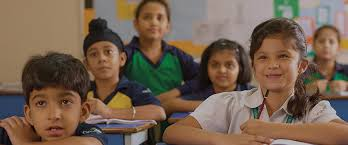

Central High School
WELCOME TO CENTRAL HIGH SCHOOL
"Service before Self" is the motto of Central High School. Our mission is to impart value-oriented Quality Education with emphasis on National Integration to develop children as good human beings with well rounded personality,scientific mindset and a global outlook. Quality education calls for involvement of our stake-holders: management,teachers,students,parents and the community in our mission and we are committed to continually improving our quality management system.. A central school was a selective secondary education school in the English education system, between the more prestigious grammar schools and the ordinary secondary schools.Central schools were established throughout the country following the Education Act 1918, although London County Council had established them in 1911 and ran fifty by 1918.
Following the Education Act 1944, the selection process was changed so that those who had not taken the eleven plus exam, but were considered clever enough to have been entered for it, were able to go to central schools.
